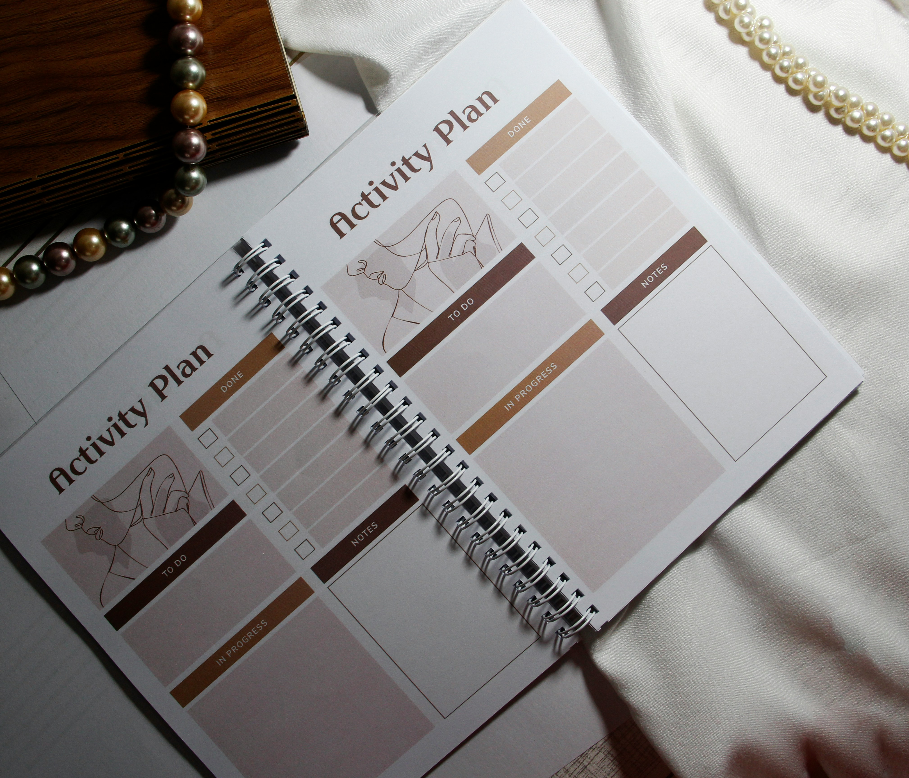
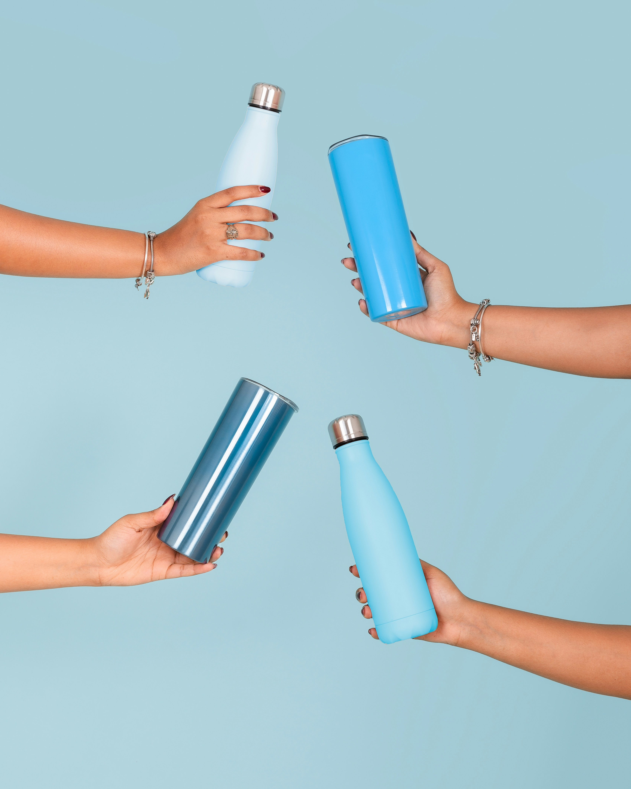

What Rowing Taught Me About Time Management
How discipline, routine, and early mornings shaped the way I manage my time.
Key Lessons
Planning Ahead
Rowing taught me to plan my schedule in advance to balance practice and academics.
Prioritization
Busy weeks forced me to focus on what matters most instead of trying to do everything.
Consistency
Daily routines made demanding schedules more manageable and less stressful.
My Experience

Balancing rowing with academics required commitment and structure. Over time, I learned how to manage my time intentionally and realistically.
Additional Takeaways

Discipline Through Routine
Discipline comes from habits, not motivation. Consistent routines helped me stay focused.

Avoiding Burnout
Scheduling rest helped prevent burnout and maintain balance.
Heard enough?
Try planning tomorrow tonight.